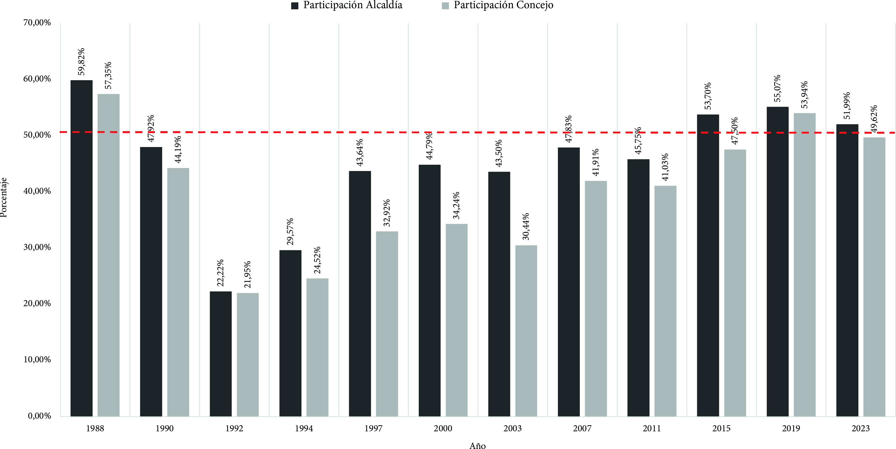
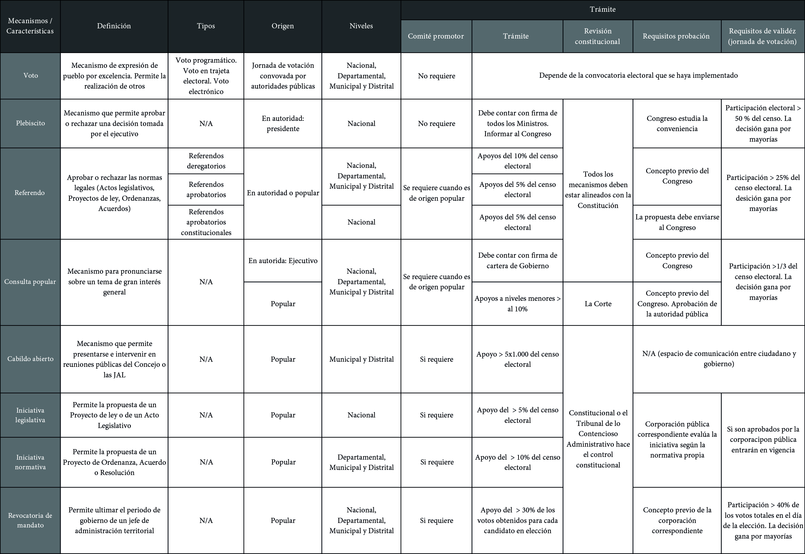

Unidad 2.1 Fortalecimiento de la ciudadanía
En la Constitución Política la participación democrática se compone de tres elementos esenciales. El primer conjunto de elementos son los mecanismos de participación, el segundo es la conformación de movimientos o partidos políticos y el tercero es el estatuto de la oposición. Los mecanismos de participación son instrumentos que permiten hacer efectiva la intervención de los ciudadanos en asuntos de interés social y político. Los mecanismos están contemplados en el artículo 103 de la Constitución Política 1:
_Son mecanismos de participación del pueblo en ejercicio de su soberanía: el voto, el plebiscito, el referendo, la consulta popular, el cabildo abierto, la iniciativa legislativa y la revocatoria del mandato. La ley los reglamentará.
_El Estado contribuirá a la organización, promoción y capacitación de las asociaciones profesionales, cívicas, sindicales, comunitarias, juveniles, benéficas o de utilidad común no gubernamentales, sin detrimento de su autonomía con el objeto de que constituyan mecanismos democráticos de representación en las diferentes instancias de participación, concertación, control y vigilancia de la gestión pública que se establezcan.
Los mecanismos reglamentados por la Ley Estatutaria 1757 de 2015 2 son: el voto, el plebiscito, el referendo, la consulta popular, el cabildo abierto, la iniciativa legislativa y normativa, la revocatoria del mandato, la movilización social, los partidos y movimientos políticos, el estatuto de la oposición.
2.1. El voto
Es un derecho que se hace efectivo a través de los comicios electorales, promovido de forma universal para los ciudadanos en ejercicio. Adicionalmente a ello, el voto es, a la vez, una herramienta para la realización de otros mecanismos. Por su importancia como mecanismo de participación, en la Carta Magna se establece un segundo artículo en torno a este, el 258 que a la letra dice: “El voto es un derecho y un deber ciudadano. El Estado velará porque se ejerza sin ningún tipo de coacción y en forma secreta por los ciudadanos en cubículos individuales instalados en cada mesa de votación”3 .
En el ejercicio democrático existe un tipo de voto que invita a ser depositado basado en el convencimiento de que las medidas, reformas, programas que va a implementar el ejecutivo sean adecuadas para promover el bien común, este es el voto programático. “Los ciudadanos pueden, con su voto, elegir a su mandatario para que haga por ellos no lo que esté a su antojo —mandato libre—, sino aquello a lo cual libremente se comprometió en su programa de gobierno y por lo cual resultó elegido”4 .
La Constitución Política de Colombia resguarda esta medida en el artículo 259 que establece que “quienes elijan gobernadores y alcaldes, imponen por mandato al elegido el programa que presentó al inscribirse como candidato”. El voto programático respalda la soberanía popular en los procesos de elección de gobernantes, así como en su gestión, al permitirles a los ciudadanos demandar a sus gobernantes las acciones que aseguraron cumplir durante la campaña.
Ahora bien, al analizar el comportamiento electoral en Bogotá se evidencia una participación ciudadana consistentemente baja. Como se muestra en la siguiente gráfica, la participación en el Distrito regularmente no supera el 50 % del censo electoral, entendido como el número total de ciudadanos habilitados para participar en el ejercicio democrático durante los comicios.
Gráfico 1. Porcentaje de participación electoral en Bogotá 1988-2023

Fuente: Elaboración Sociedad de Mejoras y Ornato de Bogotá con base en Registraduría Nacional del Estado Civil. Disponible en: DATACIVILIDADDe las últimas doce elecciones para alcaldía y concejo solo en los años 1998, 2015, 2019 y 2023 se superó la barrera del 50 % de participación, aunque en ningún caso se alcanzara el 60 %. Si bien los porcentajes de participación son fluctuantes, pueden identificarse varias tendencias. Durante los años 1988 hasta 1992 la tendencia es a la baja registrando mínimos de 20 %; del año 1994 al 2000 la tendencia de participación se reactiva sobre el 40 % para alcaldía y sobre el 30 % para concejo. Los años siguientes no presentan mayores variaciones, la participación se mantiene por debajo del 50 % hasta las elecciones de 2015, año que marca nuevamente la tendencia al aumento; el registro levemente más alto fue en 2019.
2.2. El plebiscito
El plebiscito es un mecanismo constitucional regulado por la Ley Estatutaria 1757 de 2015. Únicamente puede ser convocado por el presidente de la república, esto es, origen único en autoridad pública, con la finalidad de que los ciudadanos aprueben o rechacen alguna decisión tomada por el ejecutivo. Siempre y cuando esté alineada a la Constitución en todo momento y por ningún motivo podrá realizar una pregunta que la modifique.
Para dar inicio al trámite del mecanismo el presidente de la república debe contar con la firma de todos los ministros para convocarlo 5. Posteriormente, el Congreso de la República será informado con las motivaciones para realizarlo y la posible fecha de jornada de votación. De forma tal que el Congreso pueda manifestarse sobre la conveniencia de convocatoria del mecanismo, acto para el cual contará con un mes. De haberse cumplido el plazo y no recibir dicho pronunciamiento el presidente podrá avanzar con la convocatoria, que deberá dar lugar a la jornada dentro de los 4 meses siguientes al informe al Congreso.
Al haber recibido el pronunciamiento o el silencio administrativo, el presidente deberá informar a la Corte Constitucional o al Tribunal de lo Contencioso- Administrativo para que brinde también su concepto. La Corte realiza un control de constitucionalidad, que se encarga de verificar que el plebiscito y la pregunta sean acordes a la Constitución. La pregunta del plebiscito debe ser redactada de forma clara, que pueda ser respondida con “SÍ” | “NO”.
Ahora bien, para que el plebiscito tenga validez, debe obtener una participación mínima del 50 % del censo electoral. Y la decisión de los ciudadanos que se entiende como respaldada es la que gane por mayorías.
2.3. El referendo
El referendo es un mecanismo de participación constitucional regulado por la Ley Estatutaria 1757 de 2015 y la Ley 134 de 1994. Su finalidad es aprobar, desaprobar o derogar un proyecto de ley, una ley, una ley no aprobada en debates, una ordenanza o un acuerdo, según sea el caso, para que los ciudadanos decidan la conveniencia de estas. No obstante, la Carta Magna señala en el artículo 170 que los referendos no son procedentes cuando se refieren a tratados internacionales ni leyes de presupuesto. El referendo, además, puede tener origen en autoridad pública u origen popular, es decir, pueden ser convocados por una corporación pública o por los ciudadanos.
Existen dos tipos de referendos: los referendos derogatorios, que someten una parte o la totalidad de una norma legal vigente a consideración de los ciudadanos para que decidan su rechazo y consiguiente derogación, y los referendos aprobatorios, que someten una parte de una norma legal que no haya sido adoptada a consideración de los ciudadanos para que decidan su posible aprobación total o parcial. Ahora bien, es posible señalar un subtipo de referendo aprobatorio, el constitucional, en el cual el Congreso podrá someter a referendo un proyecto de reforma constitucional con la aprobación por mayorías de los miembros de ambas cámaras 6.
De una parte, los referendos derogatorios pueden ser tramitados por iniciativa ciudadana, a esta persona o grupo se les conoce como promotor o comité promotor, inscrito ante la Registraduría completando un formulario. Cuando es aprobado por la entidad, el comité promotor puede solicitarle la inscripción. La entidad le entrega al vocero del comité promotor un formulario de recolección de firmas para la solicitud del referendo, cuyas firmas de inscripción tienen un plazo de 6 meses para diligenciarse en el formulario. Para solicitar oficialmente un referendo derogatorio deben contar con el apoyo del 10 % del censo electoral 7, de no contar con el umbral, será archivado el proceso.
Pasados los 6 meses, las firmas son devueltas a la Registraduría para que haga la debida revisión y verificación. Si son aceptadas por la entidad, la solicitud de referendo queda registrada y comienza el proceso de convocatoria. Así como en el plebiscito, la Corte Constitucional debe realizar el control de constitucionalidad de forma urgente, recién se haya emitido el concepto de validez de la Registraduría. Al haberse aprobado por concepto de la Corte, puede convocarse la votación oficial del referendo.
De otra parte, los referendos aprobatorios tienen un trámite muy similar a los derogatorios, pero se modifican los siguientes aspectos: el porcentaje de firmas en el formulario de la Registraduría para solicitar el referendo es del 5 % del censo electoral. De allí en adelante todo se mantiene igual hasta haberse verificado la validez del referendo; en esta última, la decisión que haya tomado la ciudadanía será sancionada a los 8 días hábiles por la autoridad correspondiente y recibirá la denominación respectiva en el encabezado, además, quedará por escrito “El pueblo de Colombia decreta:”. Por ejemplo, si se realizó un referendo aprobatorio a una ordenanza, la Asamblea Departamental sancionará el articulado de la norma bautizado como tal: “Ordenanza”, con el texto “El pueblo de Colombia decreta:” y entrará en vigor desde su publicación8 .
Por su parte, los referendos constitucionales presentan algunos cambios en los requisitos del trámite. En primer lugar, la recolección de firmas en la solicitud del referendo es del 5 % del censo electoral para llevar la propuesta ante el Congreso de la República 9. Al haber obtenido las firmas y ser estas aprobadas por la Registraduría, el Congreso procede de acuerdo con la Constitución Política de Colombia, que en el artículo 378 dispone que ya sea por iniciativa del Gobierno o de los ciudadanos el Congreso de la República podrá someter a referendo un proyecto de reforma constitucional, en el cual los ciudadanos puedan escoger el articulado para votarlo con “SÍ” o “NO”10 . Para hacerlo efectivo, el Congreso deberá expedir una ley aprobada por Senado y Cámara de Representantes.
Luego de haber cumplido con lo anterior, el siguiente requisito es la revisión de constitucionalidad por parte de la Corte Constitucional o el Tribunal de lo Contencioso-Administrativo y la jornada de votación dentro de los 6 meses siguientes al concepto de la Corte. El tarjetón electoral es distinto, ya que incluye un espacio frente a cada artículo a reformar, para que el ciudadano lo rechace o acepte. Por último, la adopción de la decisión del referendo constitucional. Las reglas comunes a los referendos aprobatorios y derogatorios son:
1. Si el porcentaje de apoyos válidos superan el 20 % del censo electoral, la corporación pública correspondiente deberá proferir los actos necesarios para la realización del referendo en un plazo de 20 días11 .
2. La validez del referendo requiere de la participación de al menos ¼ (el 25 %) del censo electoral. Así, la opción marcada por la mayoría de los sufragantes es la decisión que deberá ser adoptada 12.
3. Ninguna de las normas legales modificadas por referendo podrá ser sometida a trámite alguno nuevamente dentro de los dos años siguientes, ni tampoco ser objeto de convocatoria de referendo nuevamente hasta luego de dos años13 .
2.4. Consulta popular
Mediante este mecanismo de participación el Ejecutivo, o un comité promotor, puede convocar a los ciudadanos para que se pronuncien sobre un tema de gran interés general, cuyo resultado es de obligatoria implementación. Sin embargo, no es procedente cuando versa de temas que impliquen modificar la Constitución Política. El comité promotor debe quedar inscrito ante la Registraduría diligenciando un formulario.
Las consultas pueden tener origen en autoridad pública u origen popular y pueden convocarse dentro de las entidades territoriales en cualquiera de sus niveles: departamental, distrital, municipal y local. En cada una de ellas el jefe de gobierno puede convocar a los ciudadanos a consulta con la aprobación de su respectivo gabinete. Por ejemplo, cuando la consulta es promovida por el presidente de la república es una consulta popular a nivel nacional. Esta debe contar con la firma de todos los ministros y el concepto favorable del Congreso y, a partir de la fecha del pronunciamiento, deberá ser realizada durante los cuatro meses siguientes. Esto significa que la consulta promovida por el presidente no necesita ningún tipo de apoyo ciudadano previo.
Igualmente, la consulta popular puede ser de iniciativa ciudadana y debe contar con el apoyo de un promotor o un comité promotor, el cual se presentará ante la Registraduría para proponer la iniciativa de consulta y recibir el formulario correspondiente a las firmas de solicitud. Las consultas también pueden darse en cualquiera de los niveles, no obstante, los requisitos de participación cambian. Los porcentajes requeridos durante la recolección de firmas para la solicitud de consulta varían de acuerdo con el nivel territorial de intervención. Ejemplificando, en el caso de una consulta popular nacional de iniciativa ciudadana son necesarios unos apoyos superiores al 5 % del censo electoral; mientras que las consultas en niveles menores —entidades territoriales— requieren apoyos de al menos el 10 % del censo electoral para ser enviadas a revisión de la Registraduría y, de ser aprobadas, enviadas al Congreso de la República 14.
Cabe resaltar que, en cualquiera de los niveles, de no ser superado el umbral, la iniciativa de consulta popular quedará archivada. Por el contrario, si el total de firmas recibidas es superior al 20 % del censo electoral, las corporaciones públicas correspondientes deberán proferir los actos necesarios para llevarla a cabo en un plazo máximo de 20 días 15.
Las consultas también requieren del concepto previo de la corporación pública correspondiente que podrá rechazarla o aprobarla por mayoría simple; asimismo el pronunciamiento del Congreso sobre la conveniencia de la convocatoria; y, por último, el pronunciamiento de la Corte Constitucional para el control de constitucionalidad. Dentro de los ocho días siguientes se fijará la fecha para realizar la jornada de votación 16. Al haber cumplido con tales requisitos, la jornada de consulta deberá realizarse dentro de los tres meses siguientes.
Los únicos aspectos que pueden ser objeto de consulta popular son aquellos que sean de competencia de la corporación o entidad territorial, con excepción de aquellos temas exclusivos del gobierno, presupuesto o cuestiones fiscales, relaciones internacionales, amnistías o indultos, ni preservación del orden público. Así lo determina el artículo 18 17.
En la consulta popular la pregunta a someter a decisión debe ser clara y poder ser respondida con “SÍ” o “NO”. La respuesta que haya obtenido la mitad más uno de los votos, siempre y cuando haya participado la tercera parte (33,3 %) o más del censo electoral, el órgano o corporación correspondiente deberá tomar medidas para hacerla efectiva 18.
En el año 2000, en la ciudad de Bogotá, el entonces alcalde Enrique Peñalosa convocó a una consulta popular sobre el día sin carro. En este caso, la consulta se regía por normativa de la Ley 134 de 94. La consulta fue de carácter distrital, por lo cual debió obtener la firma de todos los miembros del Concejo, posteriormente obtener el concepto previo de la Corte Constitucional y del Tribunal de lo Contencioso- Administrativo. En la consulta, el exalcalde formuló dos preguntas para votación de la ciudadanía:
1) ¿Está usted de acuerdo, sí o no, con establecer la celebración de un día sin carro a partir del año 2000, prohibiendo la circulación de vehículos automotores en la ciudad de Bogotá el primer jueves del mes de febrero de todos los años en el horario de 6:30 de la mañana a 7:30 de la tarde?
2) ¿Está usted de acuerdo, sí o no, con el objeto de construir una ciudad ambientalmente sostenible, con un aire más puro, con menos congestiones de tráfico y más calidad de vida, en prohibir a partir del primero de enero del año 2015 la circulación de todos los vehículos automotores en la ciudad de Bogotá en días hábiles, ¿en los horarios comprendidos entre las 6:00 y 9:00 am y entre las 4:30 y las 7:30 pm?19 .
De las preguntas, fue respondida afirmativamente por el 50 %+1 de los votos válidos la 1), mientras que la 2) no obtuvo los votos necesarios. Siendo la consulta popular un mecanismo de participación de obligatorio cumplimiento, desde el año 2001 en la ciudad se efectúa el día sin carro cada año en el mes de febrero. El Decreto Distrital que la reguló fue el 1098 de 2000. En la actualidad tal decreto está derogado, pero en reemplazo se mantiene vigente la medida del día sin carro mediante el Decreto Distrital 036 de 2023.
2.5. El cabildo abierto
Es un mecanismo de participación ciudadana que permite a los ciudadanos presentarse e intervenir en las reuniones públicas de los concejos distritales, municipales o juntas administradoras locales-JAL para participar en las discusiones de interés general 20. El cabildo abierto únicamente puede ser solicitado por los ciudadanos, es decir, es de origen popular. Al menos un 5x1000 del censo electoral de la entidad territorial es necesario para solicitar a la secretaría de dicha entidad la discusión de un asunto de interés en un cabildo abierto 21.
Cabe resaltar que, como su nombre lo indica, el cabildo debe tener total apertura para los ciudadanos, por ello el hecho de que exista un comité que lo promueva no significa que no puedan asistir otras personas que estén también interesadas. Sin embargo, el vocero y los ciudadanos que se inscriban con anticipación para intervenir en el cabildo son quienes podrán hacer uso de la palabra.
Es asunto de los concejos o de las JAL difundir la organización del cabildo con la finalidad de que una mayor cantidad de ciudadanos se inscriban para poder hacerse partícipes. Los asuntos para considerar serán los que los ciudadanos soliciten, siempre y cuando sean de su competencia, además, dentro de estas reuniones, los ciudadanos pueden plantear preguntas o solicitudes que serán resueltas la semana siguiente al cabildo en una audiencia pública 22.
Tomando en consideración que los cabildos funcionan como una reunión entre la autoridad local y los ciudadanos, es necesario que el jefe de gobierno local haga presencia. Sin embargo, si los ciudadanos pretenden que otro jefe de gobierno se encuentre en el cabildo también podrá citarse si se le adjuntan las firmas y las preguntas que se le vayan a formular.
2.6. La iniciativa legislativa y normativa
La iniciativa legislativa o normativa son mecanismos que permiten a los ciudadanos realizar propuestas de normas legales ante la corporación pública correspondiente, esto significa que son de origen popular. De una parte, una iniciativa legislativa es la propuesta ciudadana de un proyecto de Ley o de Acto Legislativo y se realiza ante el Congreso de la República. De otra parte, una iniciativa normativa es un proyecto de Ordenanza, Acuerdo o Resolución23 . Sin embargo, ninguna iniciativa puede tratar de los temas exclusivos del legislativo o del ejecutivo. Por ejemplo, no pueden versar sobre presupuesto, relaciones internacionales, indultos o amnistías, o preservación del orden público 24.
Ambos tipos de iniciativa requieren de un promotor o un comité promotor conformado ante la Registraduría, que complete el formulario y el articulado de la propuesta, la exposición de motivos, entre otros. Al quedar registrada la propuesta la Registraduría hará la entrega del formulario de recolección de apoyos al promotor.
Para superar la etapa de recolección de firmas y presentar la iniciativa ante la corporación correspondiente es necesario el apoyo de al menos un 10 % del censo electoral, en el caso de la iniciativa normativa, o del 5 % del censo electoral, en el caso de la iniciativa legislativa, todo dentro de los seis meses siguientes. Ahora bien, en el caso de que se supere el 20 % del censo será deber de la corporación proferir todos los actos necesarios para realizarla25 .
Al cabo del tiempo, cuando los formularios sean entregados a la Registraduría, esta deberá verificarlos en un plazo de cuarenta y cinco (45) días. Cuando la Registraduría haya expedido el certificado de verificación enviará a la entidad competente el articulado y la exposición de motivos, asimismo, enviará la información a la Corte Constitucional con el fin de que evalúe la constitucionalidad de la propuesta. El trámite de la iniciativa será estudiado bajo la normativa de la corporación correspondiente. Sin embargo, ambos tipos de iniciativas improrrogables son de estudio prioritario y pueden ser apeladas por el comité promotor en el caso de que sea negada en comisión 26.
Luego de haber cumplido con los requisitos, los proyectos de normas legales entrarán en vigor a partir del momento de publicación, que, a su vez, deberá hacerse dentro de los ocho (8) días siguientes a la aprobación de los resultados por la organización electoral en el Diario Oficial de la corporación respectiva 27.
2.7. La revocatoria del mandato
La revocatoria del mandato es un mecanismo de participación de origen popular para dar por terminado el período de gobierno del jefe de la administración de una entidad territorial, siempre y cuando se haya cumplido un año de gobierno. Para llevar a cabo la revocatoria del mandato es necesaria la solicitud por parte de un promotor o un comité promotor inscrito ante la Registraduría.
Cuando se solicite el formulario de revocatoria a la Registraduría y que se complete con la información requerida, deberán presentarse los apoyos que, en este caso, no pueden ser menores al 30 % de votos obtenidos por el mandatario el día de su elección 28. A partir del momento de la entrega, la Registraduría tendrá un plazo de quince (15) días para elaborar los nuevos formularios en los que se recolectarán las firmas durante los seis (6) meses siguientes. Cuando se cumpla con los requisitos y los formularios sean devueltos a revisión de la Registraduría, sean certificados por esta, las corporaciones correspondientes emitan los conceptos previos y la Corte Constitucional haga la revisión de constitucionalidad, se fijará la fecha dentro de los dos (2) meses siguientes para llevar a cabo la jornada de votación 29.
Para que la revocatoria sea aprobada por los ciudadanos, los votos a favor deberán superar el 50 % +1 del censo electoral, siempre y cuando haya una participación mínima del 40 % de los votos totales registrados el día que el gobernante fue elegido, en la cual la mayoría concuerde en la revocatoria. En el caso de que la votación no sea suficiente y no se proceda con la revocatoria, no será permitido un segundo intento dentro de su mandato 30. Si en la votación se decide revocar el mandato, la ejecución será inmediata. Luego deberá ser elegido un sucesor dentro de los dos meses siguientes, mientras tanto en el cargo quedará un mandatario encargado.
En Bogotá, en el año 2017, al exalcalde Enrique Peñalosa le fue iniciado un trámite de revocatoria del mandato durante su segundo mandato (2016-2020). El proceso de revocatoria fue promovido por el Comité Unidos Revocamos a Peñalosa y alcanzó a presentar 700 000 que eran más del doble de las requeridas 31. Del total de firmas fueron avaladas 473 700, posteriormente era competencia de las corporaciones públicas correspondientes brindar su concepto, hecho por el cual el Consejo Nacional Electoral desaprueba el acto y ordena investigar a los promotores del Comité por presuntas irregularidades en la financiación 32 .
Tabla 1. Mecanismos de participación constitucional

Fuente: Elaboración Sociedad de Mejoras y Ornato de Bogotá.2.8. La movilización social
La movilización configura un tipo de participación ciudadana alternativa a los mecanismos institucionalizados que ofrece el Estado. Mientras que todos los mecanismos de participación mencionados anteriormente deben practicarse siguiendo las normativas que los regulan y a la vez regulan el comportamiento de las personas, la movilización es más dinámica, menos esquemática. Son los actores que la desarrollan quienes toman las decisiones de ejecución, por ejemplo, de tiempo, espacio, objetivos, número de personas e, incluso, pueden reservarse la admisión de integrantes, aunque esto es más difícil de controlar.
Este segmento de la participación está contemplado en la Constitución Política de 1991 dentro de los derechos fundamentales. Más específicamente en el artículo 37 determinando que todas las personas tienen permitido conformar reuniones y manifestarse públicamente de forma pacífica.
Como derecho, la movilización social representa una posibilidad para comunicar de forma directa los reclamos sociales a los tomadores de decisiones. Esto le permite establecerse como una forma de ejercer presión ante las autoridades, muchas veces con la intención de promover procesos de discusión o de exigir la acción o inacción de hechos que perjudican la dignidad humana. Las manifestaciones sociales hacen uso de diversas herramientas de expresión, como el arte mediante el cual exponen los mensajes de inconformidad al Estado cuando consideran que su alcance es poco en la satisfacción de necesidades.
Ahora bien, la movilización social como activismo político también puede incluir las organizaciones sindicales. A pesar de que su origen no recaiga siempre en reclamos al Estado, sino también a corporaciones privadas, las manifestaciones como los pliegos de peticiones, asociaciones sociales, movilizaciones y reconocimiento de la personalidad jurídica tienen un importante componente de participación ciudadana.
Los sindicatos están vinculados al derecho fundamental al trabajo señalado en el artículo 25 de la Constitución Política: “El trabajo es un derecho y una obligación social y goza, en todas sus modalidades, de la especial protección del Estado. Toda persona tiene derecho a un trabajo en condiciones dignas y justas”. Gran parte de los movimientos sindicales se enmarcan en la garantía de este artículo, especialmente en la búsqueda de condiciones de trabajo dignas.
Del mismo modo, los sindicatos están protegidos constitucionalmente por el artículo 39 para todos los ciudadanos a excepción de los miembros de la Fuerza Pública. El artículo establece que todos los empleados tienen derecho a conformar asociaciones o sindicatos mediante la inscripción del acta de constitución.
Otras leyes como el Código Penal y el Código Sustantivo del Trabajo protegen este derecho. El primero busca evitar el daño a la integridad física de los sindicatos; por ejemplo, aumenta las penas de ciertos delitos cuando son cometidos sobre los sindicados o también los cataloga como causales de agravación punitiva. De otra parte, el segundo regula las condiciones de procedimiento, los derechos y deberes de los sindicatos.
2.9. Partidos o movimientos políticos
Los partidos o los movimientos políticos son grupos de ciudadanos que se reúnen en uso de las libertades de asociación, conciencia, expresión y en ejercicio de sus derechos políticos, con la finalidad de incidir de forma directa en las decisiones políticas del país. Los partidos y movimientos políticos son figuras importantes en el ejercicio de la participación ciudadana plural y, por tanto, en la construcción de la democracia.
En Colombia, la normativa primaria alrededor de los partidos o movimientos políticos se encuentra en la Carta Magna, en el Título IV, en los artículos 107 al 111. El artículo 107 garantiza a todas las personas la posibilidad de hacerse partícipe del partido o movimiento político de su elección o fundar uno, en observancia de que pertenezca solo a uno de forma simultánea. Además, el artículo permite a los partidos conformados consultar al pueblo para tomar decisiones relativas a la elección de candidatos, coaliciones, alianzas y otras similares del propio partido. Es de notar que dentro del articulado se estipula la participación ciudadana desde dos grandes vertientes: el acceso al poder mediante la vinculación a un grupo político organizado y la posibilidad de consulta de determinadas decisiones al pueblo. Dichas vertientes pueden ser leídas como dos formas paralelas para invocar la participación ciudadana y el ejercicio democrático.
Los artículos incluyen información acerca de las condiciones y los beneficios que reciben las agrupaciones políticas cuando se les reconoce la personería jurídica. Como condiciones se tienen las siguientes: en primer lugar, deben obtener el 3 % de votos válidos en las elecciones del Congreso, con excepción de los grupos minoritarios. En segundo lugar, celebrar convenciones de intervención en asuntos públicos al menos cada dos años. De otra parte, los beneficios de los que pueden gozar son: primero, la concurrencia en financiación política o electoral y segundo, el acceso a ciertos espacios publicitarios y espacios institucionales de radio y televisión en el caso de las elecciones para presidencia.
2.10. Estatuto de la oposición
El estatuto de la oposición es una posibilidad que dota a los partidos o movimientos políticos que estén en desacuerdo con el Gobierno de ejercer sobre él funciones críticas de control y veeduría ante los actos que profiera o que realice. En otras palabras, la posibilidad de que los partidos o movimientos políticos se declaren en oposición del Gobierno de turno.
El estatuto se crea con el objetivo de garantizar que los partidos contrarios al Gobierno puedan hacerse partícipes de las decisiones que tome el de turno. Bajo los lineamientos del estatuto, todos los partidos políticos o movimientos que tengan personería jurídica están obligados a declararse parte del gobierno, en oposición o independientes.
El estatuto se consagra en la Constitución en el artículo 112. Según el artículo, los partidos que se declaren en oposición deben analizar de forma crítica el modelo de gobierno que esté siendo implementado, plantear y desarrollar alternativas políticas; además, tienen una amplia responsabilidad participativa, promovida por la ley, ya que la Constitución les garantiza el acceso preferente a la información oficial y el uso de medios de comunicación estatales.
Más adelante, el artículo establece que el segundo candidato con mayor cantidad de votos en los cargos de la rama ejecutiva tendrá el derecho personal a ocupar la curul equivalente en la corporación de la rama legislativa correspondiente. Es decir, el candidato a presidente ocupa una curul en el Senado; el candidato a vicepresidente, en la Cámara de Representantes; el candidato a gobernador, en la Asamblea Departamental; y el candidato a alcalde, en el concejo correspondiente.
La importancia del estatuto de la oposición trata de una posible reivindicación de los derechos, pues la historia política del país se ha caracterizado por la exclusión política de los grupos distanciados ideológicamente del Gobierno. En Colombia, las constituciones anteriores fueron escritas en períodos de intolerancia basados en la noción del enemigo, como un ejercicio de opresión a quienes representaran la diferencia. Por ello, pese a los tropiezos que suelen tener los grupos políticos de oposición en la actualidad, como las incoherencias y los conflictos internos, el estatuto de la oposición es símbolo de la democracia, la pluralidad y la posibilidad de crear diálogo.
2.11. Participación ciudadana en el ámbito distrital
En la ciudad existe una gran cantidad de entidades, espacios, instrumentos y programas destinados a promover la participación de los ciudadanos, incluso los menores edad, en los asuntos públicos. En los programas se evidencia el fortalecimiento de una cultura democrática con mayor apropiación por parte de la ciudadanía al establecer puentes de comunicación y trabajo entre los ciudadanos y los gobernantes. La normativa distrital que señala el derecho a la participación ciudadana se menciona a continuación.
2.11.1 Acuerdo Distrital 13 de 2000
El Acuerdo Distrital 13 de 2000 33 reglamentó la participación ciudadana en la elaboración, aprobación, ejecución, seguimiento, evaluación y control de los Planes de Desarrollo Local de Bogotá. Para ello, estableció mecanismos como los Consejos de Planeación Local-CPL, y los Encuentros Ciudadanos, concebidos como espacios para que la ciudadanía participara en la identificación de necesidades, formulación y priorización de propuestas y seguimiento de la gestión local. Este Acuerdo constituyó un referente para la institucionalización de la participación ciudadana en la planeación de las localidades, hasta su derogación mediante el Acuerdo Distrital 878 de 2023.
2.11.2. Consejo de Planeación Local
Consejo de carácter consultivo dispuesto en todas las localidades como instancia de participación para la planeación. Su función incluye el diagnóstico, presentación de propuestas, organización de eventos participativos, deliberación, seguimiento y evaluación sobre los proyectos y los programas que habrían de consolidarse en el Plan de Desarrollo.
2.11.3. Encuentros ciudadanos
El Acuerdo exige a la Alcaldía Local la apertura de Encuentros Ciudadanos como seminarios, talleres, audiencias públicas y foros informativos para promover la participación ciudadana en los contenidos del Plan, especialmente aquellos que se vieran beneficiados —o afectados— por los proyectos contenidos.
2.12. Acuerdo Distrital 119 de 2004
El Plan de Desarrollo del gobierno de Luis Eduardo Garzón, para los años 2004-2008, formuló las bases de los sistemas de participación ciudadana en la ciudad, con la finalidad de que, junto a otros principios, condujera a la reconciliación ciudadana y a la construcción de la confianza.
Dos programas son de gran relevancia para el cumplimiento de la participación. De una parte, el relativo a la participación ciudadana es el diseño y la implementación de un Sistema Distrital de Participación que incluyera consejos, redes y comités en todas las localidades. De otra parte, aquellos dirigidos a la reconciliación contemplaban la participación como una herramienta que aumentara la responsabilidad social y los derechos humanos, por ejemplo, mediante la gestión de una Escuela de Derechos Humanos 34.
2.13. Acuerdo Distrital 257 de 2006
El Acuerdo Distrital 257 de 2006 35 expone las normas básicas de las entidades del Distrito, así como los principios de la función administrativa que debe asumir el Distrito son la democratización y control social. De una parte, enuncia las acciones en materia de participación ciudadana y por el otro, los funcionarios que deben encargarse de hacerla efectiva.
El Título V, Democratización y control social de la Administración Pública Local, reglamenta el deber de promover la participación en todas las etapas de la gestión pública, fortalecer los espacios de comunicación entre gobierno y ciudadanos mediante la concertación. En principio, se garantiza la difusión de la información relativa a la evaluación de eficiencia, impacto y gestión de la administración y luego se incluyen instancias como el diseño de un sistema de medición del impacto de los planes de desarrollo en el mejoramiento de la calidad de vida, presentación y sustentación de los criterios para la asignación de presupuestos, diseño e implementación de un sistema de presupuesto participativo y de un sistema distrital de participación.
Adicionalmente, el control social a la administración pública también es impulsado de forma expresa por este acuerdo, ya que afirma en el artículo 40 que el Gobierno deberá tomar acciones como el apoyo a las redes de veeduría y a los mecanismos de control, el apoyo a los consejos territoriales y locales de planeación, realizar programas de capacitación ciudadana y realizar audiencias de rendición de cuentas.
Por último, establece la forma en que el Gobierno estará integrado, junto con la misión de contribuir a la participación ciudadana mediante la gobernabilidad y la generación de espacios y procesos sostenibles de participación. El Sector Gobierno se integrará por la Secretaría Distrital de Gobierno, el Departamento Administrativo de la Defensoría del Espacio Público y las adscritas, entre ellas, el recién nombrado Instituto Distrital de la Participación y Acción Comunal-IDPAC, antes llamado Departamento Administrativo de Acción Comunal.
2.14. Acuerdo Distrital 740 de 2019
El Acuerdo Distrital 740 de 2019 36 establece las normas de organización y funcionamiento de las localidades de Bogotá. Su principal enfoque es definirlas como parte de la organización del territorio y de su estructura político-administrativa; otorgar sus competencias y los principios que la regirán.
Una de las competencias es brindar a los ciudadanos los espacios de incidencia política, por ello, regulan los presupuestos participativos. En el acuerdo, los recursos destinados para los presupuestos participativos eran de al menos el 10 % del dinero asignado a cada localidad en los Fondos de Desarrollo Local. Además, se fijaron las atribuciones de la Alcaldía Local, que incluyen la promoción de la organización social, facilitando la participación de los ciudadanos en los procesos de gestión.
2.15. Acuerdo Distrital 878 de 2023
En este Acuerdo 37 se determinan los lineamientos del Sistema Distrital de Planeación y la creación de los Planes de Desarrollo, con el objeto de garantizar la participación de los ciudadanos en los procesos de planeación del Distrito y, en lo posible, lograr que los instrumentos de planeación sean el resultado de las concertaciones con ciudadanos. Las herramientas e instancias que propone el Acuerdo son las siguientes:
2.16. Consejo Territorial de Planeación Distrital
Definido en el artículo 10 38, el Consejo es la máxima instancia de planeación participativa del Distrito que pretende incluir a los ciudadanos en la toma de decisiones de la planificación del territorio. Con esta finalidad, al Consejo le fueron asignadas funciones como: analizar los proyectos de Plan de Desarrollo y Plan de Ordenamiento Territorial, garantizar la representación ciudadana en las instancias de participación, organizar los espacios de participación en los que se discutirán los proyectos, presentar recomendaciones a las autoridades de planeación para que tengan mayor incidencia ciudadana.
2.17. Consejo de Planeación Local
A nivel local, se dispuso el Consejo de Planeación Local que existe en cada una de las localidades de Bogotá, para que los ciudadanos puedan participar en los proyectos de planeación local, como el proyecto de Plan de Desarrollo Local-PDL. A este Consejo le fueron atribuidas funciones como el diagnóstico de las necesidades de la localidad, propuestas de insumo en la formulación del PDL y la coordinación de espacios de discusión sobre los proyectos.
2.18. Encuentros ciudadanos y otros mecanismos
Los encuentros son espacios de participación que permiten el diálogo entre los ciudadanos y las autoridades para definir los problemas o aportes en la definición de los objetivos y los proyectos a establecerse en el PDL. Para participar en los encuentros, los ciudadanos deberán inscribirse y con ello ya podrán presentar propuestas para ser estudiadas por las autoridades de planeación.
Las mesas son herramientas de las que podrá hacerse uso en las diferentes instancias de participación, especialmente en la consolidación de los insumos que serán utilizados en la realización del proyecto de planeación territorial. Para asistir también es necesario que los ciudadanos se postulen durante los encuentros ciudadanos.
El Plan de Desarrollo Local —instrumento de planeación— contiene las iniciativas ciudadanas que resultan de los encuentros mencionados anteriormente, encuentros ciudadanos, mesas de trabajo, foros, entre otros. Los bancos están divididos en los Bancos de Iniciativas-BI, y el Banco de Proyectos Local-BPL. Parágrafo 1. El Banco de Iniciativas-BI estará a cargo del Consejo de Planeación Local. La Alcaldía Local prestará el apoyo tanto administrativo como logístico que sea necesario para que el Consejo de Planeación Local pueda desempeñar esta labor.
2.19. Decretos Distritales
Las diferentes administraciones distritales, con el ánimo de fortalecer la participación ciudadana, han expedido diferentes decretos, entre los cuales cabe mencionar los siguientes:
2.19.1. Decreto Distrital 448 de 2007
El Decreto Distrital 448 de 2007 39 —derogado por el Decreto Distrital 606 de 2023— creó y formuló la estructura del Sistema Distrital de Participación Ciudadana teniendo en cuenta el programa del Plan de Desarrollo “Bogotá sin Indiferencia: un compromiso social contra la pobreza”, que hace efectivo el diseño e implementación del Sistema. En el Decreto, el Sistema fue definido como “un mecanismo de articulación entre la administración distrital, las instancias de participación, las organizaciones sociales y comunitarias y redes, asociaciones, alianzas, con el fin de garantizar el derecho a la participación en las políticas públicas del Distrito Capital”.
El Sistema está estructurado por componentes como los actores que incluyen organizaciones sociales, entidad públicas y espacios de comunicación ciudadanía-gobierno, que deberán gestionar los siguientes aspectos: la información para publicar al servicio de la ciudadanía, la formación ciudadana para la participación, la investigación relativa a la participación y los procesos de movilización social.
De una parte, los actores institucionales del Sistema incluyen el Concejo de Bogotá, el Alcalde(sa) Mayor, el Consejo de Gobierno Distrital, la Secretaría de Gobierno, el IDPAC y las secretarías de despacho. De otra parte, los actores sociales son las organizaciones sociales, comunitarias, gremios, poblaciones, redes, alianzas, entre otras, que representen sectores sociales a nivel distrital o local.
2.19.2. Decreto Distrital 503 de 2011
Es derogado por el Decreto Distrital 477 de 2023, a pesar de contener estrategias y planes muy similares. El Decreto Distrital 503 de 2011 40 adopta la Política Pública de Participación Incidente en el Distrito Capital, comprendiendo que la participación es el derecho de ejercer el poder con el que cuentan los ciudadanos como sujetos sociales y políticos para incidir en los asuntos públicos mediante el diálogo y la concertación.
El decreto está basado en principios de dignidad humana, equidad, diversidad, deliberación, incidencia, corresponsabilidad, territorialidad, titularidad y efectividad de los derechos, autonomía; y tiene como objetivo fortalecer una cultura democrática que garantice la participación en la formulación, ejecución y control de políticas públicas. El decreto plantea siete líneas de acción relativas a fortalecer la participación. Entre ellas, fortalecer la participación incidente, articular acciones de participación, fortalecer redes u organizaciones sociales autónomas, fortalecer la gestión pública en función de la participación, implementar las estrategias de la política pública de participación incidente.
El decreto también establece las estrategias de acción relativas a la participación, como los presupuestos participativos, la movilización, la investigación en esta materia y la divulgación de la información. Nótese que las estrategias propuestas en este decreto están directamente ligadas a las presentadas en el Decreto Distrital 477 de 2023 que lo deroga.
2.19.3. Decreto Distrital 321 de 2018
El Decreto Distrital 321 de 2018 41 crea el Consejo Consultivo Distrital de Participación Ciudadana para el Distrito de Bogotá, en cumplimiento del artículo 81 de la Ley Estatutaria 1757 de 2015. El Consejo se integra por la Secretaría Distrital de Gobierno, el IDPAC; representantes de las alcaldías locales, de las JAL, de las Asociaciones de Víctimas, del Consejo Territorial de Planeación Distrital, de la Federación de Acción Comunal del Distrito Capital, de la Asociación Colombiana de Universidades, de las ONG, de las asociaciones de veedurías, de los gremios económicos, de las asociaciones campesinas, del Consejo Distrital de Comunidades Negras, Afrocolombianas, Raizales y Palenqueras, del Consejo Consultivo y de Concertación para los Pueblos Indígenas, del Consejo Consultivo de Mujeres, del Consejo Distrital de Juventud, de los estudiantes universitarios, del Consejo Distrital de Discapacidad, del Consejo Consultivo LGBT, del Consejo Consultivo Distrital de Niños, Niñas y Adolescentes, del Consejo Distrital de Sabios y Sabias, del Consejo Distrital de Propiedad Horizontal, de la Plataforma Distrital de Juventud; de las Organizaciones del Pueblo Rrom, animalistas, ambientalistas, bici usuarios, migrantes, de sectores religiosos u otras que también deseen participar 42.
La participación de un representante o director de cada una de estas instancias es de gran importancia en el diseño e implementación de políticas públicas inclusivas para los sectores sociales que intervienen política o socialmente en el Distrito. El Consejo Consultivo tiene el deber de buscar las estrategias y adoptar las medidas que incentiven a los ciudadanos para dialogar con otros sectores e intervenir en las decisiones. Al ser este un proceso constructivo, requiere de la implementación de medidas propias que permitan a los integrantes del Consejo autoevaluarse y evaluar los avances en participación ciudadana.
2.19.4. Decreto Distrital 768 de 2019 43
Se reglamenta el Acuerdo 740 de 2019, estableciendo las disposiciones que facilitarán su implementación, entre ellas, el fortaleciendo el rol de las alcaldías locales, la gestión y ejecución de los recursos de los Fondos de Desarrollo Local, la asesoría técnica para las alcaldías locales y el control sobre las JAL.
Algunas disposiciones relevantes son la asignación de nuevas funciones de la Alcaldía Mayor a la Alcaldía Local según sus capacidades para el cumplimiento de sus funciones; la posibilidad de las entidades y sectores distritales de prestar asesoría técnica de asesoría a las alcaldías locales como mecanismos de acompañamiento. El Decreto establece también los mecanismos de control y vigilancia a las alcaldías locales y a las JAL. De la primera, la encargada de la vigilancia son las secretarías de Gobierno y Planeación; y de la segunda, los servidores designados por las secretarías administrativas y las entidades adscritas.
Por último, se decretó que el Fondo de Desarrollo Local quedara bajo la responsabilidad de la alcaldía local para su ejecución, formulación y seguimiento, teniendo en cuenta los lineamientos de política para la inversión local; una herramienta que permite a la administración distrital orientar las inversiones a incorporar en el Plan de Desarrollo Local.
2.19.5. Decreto Distrital 819 de 2019
El Decreto Distrital 819 de 2019 44 organiza el Sistema Local de Coordinación y Participación Ciudadana del Distrito Capital. Su finalidad es fortalecer la gestión de las instancias de coordinación institucional y de participación ciudadana, garantizar espacios efectivos de participación para dichas instancias y promover el uso eficiente de los recursos en el cumplimiento de las metas. Con este propósito, el Decreto determina la conformación del Sistema, las etapas para su adopción y los criterios para la creación de nuevas instancias de participación que, de conformidad con la Ley, sus competencias y las necesidades locales para fomentar la participación, deberán ser aprobadas por la Secretaría Distrital de Gobierno, la Secretaría General de la Alcaldía Mayor y la Secretaría Distrital de Planeación, para su posterior implementación.
2.19.6. Decreto Distrital 477 de 2023
Este Decreto Distrital 45 adopta la Política Pública de Participación Incidente del Distrito Capital 2023 y 2034, la cual tiene por objeto fortalecer el derecho a la participación con el propósito de que se mejoren las condiciones de gobernanza, estructura institucional y las competencias ciudadanas. La política deberá ser implementada en todos los espacios donde existan procesos de intervención ciudadana, con los enfoques que abanderó la alcaldía de Claudia López: enfoque de derechos humanos, de género, diferencia, territorial y ambiental.
Como punto de partida, la política deberá cumplir con la participación desde 3 vertientes: la primera es como derecho que requiere esfuerzos institucionales, la segunda como ejercicio en lo cotidiano que les permita comprender las realidades sociales y proponer alternativas para el mejoramiento de las condiciones de vida, y el tercero como condición del Estado de Derecho basado en la democracia.
El decreto dispone que en la implementación de la política pública se hace uso de las estrategias que están explicadas en el Decreto Distrital 606 de 2023, como los presupuestos y las consultas ciudadanas, abordadas ya en otras normas anteriores; así como también otras novedosas como los laboratorios de innovación, plataformas digitales de co-creación y los sistemas de votación electrónica.
2.19.7. Decreto Distrital 606 de 2023
El Decreto Distrital 606 de 2023 46 —derogado por el Decreto Distrital 642 de 2025— es una actualización del Sistema Distrital de Participación Ciudadana de Bogotá que se encarga de reglamentar las condiciones de acceso o ejercicio a la participación ciudadana activa, con la finalidad de promover: el cumplimiento de los derechos humanos, el cumplimiento de los principios democráticos, la participación igualitaria de las mujeres en asuntos públicos, la eliminación de las brechas de género; diseñar y ejecutar proyectos o programas encaminados a promover la participación ciudadana; evitar la discriminación en cualquiera de sus vertientes; fomentar el trabajo coordinado y armónico entre las autoridades administrativas, especialmente aquellas relacionadas con la participación ciudadana.
¿Qué es el Sistema Distrital de Participación Ciudadana? El artículo 2° lo define como:
El conjunto de normas, principios, componentes, autoridades, lineamientos, actores e instancias que tienen por propósito el trámite de las demandas ciudadanas dirigidas a garantizar el mayor alcance en el ejercicio del derecho a la participación ciudadana, así como a la implementación de las condiciones y estrategias para el ejercicio efectivo de este.
El Sistema está orientado por cuatro enfoques descritos en el artículo 4: El enfoque de derechos humanos que pretende generar un marco referencial para el desarrollo de políticas que garanticen los derechos de una vida digna. El enfoque de género busca reconocer la importancia de crear ejercicios que garanticen la paridad de género e implementen protocolos de prevención de violencias sexuales y domésticas. El enfoque diferencial, se centra en el reconocimiento de la pluralidad y el acompañamiento diferenciado que requieren para el ejercicio participativo. El enfoque territorial, reconoce las dinámicas sociales complejas que ocurren en el territorio.
El Decreto establece que el ejercicio de la participación ciudadana se implementará mediante los siguientes instrumentos del Sistema Distrital de Participación Ciudadana, contemplados en el artículo 8:
1. Presupuestos participativos:
Son definidos en la Ley como instrumentos democráticos, incluyentes y pedagógicos con enfoque de género, enfoque diferencial y enfoque territorial en el que las organizaciones ciudadanas pueden decidir cómo distribuir una parte de los recursos del Fondo de Desarrollo Local hacia proyectos de inversión pública. Todo esto tomando en consideración el plan de inversiones del Plan de Desarrollo Distrital.
2. Formación en capacidades democráticas:
Entendido como el instrumento de ciudad a través del cual, el Instituto Distrital de Participación y Acción Comunal-IDPAC oferta a toda la ciudadanía, organizaciones, instancias e instituciones públicas y privadas programas de formación en capacidades democráticas. En este proceso también pueden sumarse el modelo de fortalecimiento para la organización social, comunal, de medios comunitarios y alternativos, organizaciones de propiedad horizontal y de las instancias de participación del Distrito Capital. El modelo es un instrumento de autoevaluación en forma de encuesta de las instancias de participación para identificar las fortalezas y debilidad de sus acciones.
3. Uso de herramientas digitales y tecnológicas:
En el marco de fomentar la participación ciudadana, el IDPAC abrió una plataforma digital, una emisora de radio y un laboratorio ciudadano. BogotáAbierta es la plataforma digital en la que los ciudadanos pueden crear o participar en retos creados por las entidades del Distrito para responder preguntas sobre lo que esperas de la ciudad. ParticiLAB trabaja en conjunto con BogotaAbierta y es un laboratorio de innovación ciudadana para presentar sus ideas mediante la superación de retos.
DC Radio es la emisora virtual de IDPAC, en ella se divulga y promueven los procesos deliberativos y la toma de decisiones en el Distrito. Por último, en materia de participación existe el Observatorio de la Participación Ciudadana, y el Banco de Iniciativas, que es un sistema de información para organizar iniciativas sociales con lugar en determinados procesos o instancias participativas.
4. Fondos públicos:
El Distrito cuenta con el Fondo Chikaná cuyos recursos están destinados a incentivar la participación en la ciudad. Por otro lado, el ejercicio participativo será promovido mediante tres componentes. El primero es el componente institucional que tiene como propósito coordinar la acción de la administración del Distrito en el cumplimiento del derecho a la participación, para lo cual estará compuesto de la Comisión Intersectorial de Participación-CIP y las Comisiones Locales Intersectoriales de Participación-CLIP 47.
El segundo componente es la gobernanza que comprende el conjunto de actores e instancias de participación ciudadana, representadas por el Consejo Consultivo Distrital de Participación con el fin de proponer y generar acciones para garantizar el derecho a la participación 48. El tercer componente es representación ciudadana, que incluye los instrumentos o instancias de participación que la ciudadanía o instituciones distritales decidan crear con propósitos participativos 49.
En el Decreto son evidentes los esfuerzos por promover una participación política más inclusiva e igualitaria, de allí su enfoque de género. Los cambios comienzan desde la adopción del lenguaje en su versión femenina, por ejemplo, los cargos públicos se expresan a lo largo del Decreto como el “alcalde y la alcaldesa”, “el (la) secretario (a)”, “su delegado (a)”.
Adicionalmente, el decreto define las acciones de prevención de los actos de discriminación y violencia, en especial aquellos basados en género. Para ello, por ejemplo, se decreta la creación de la Comisión para la prevención de violencias basadas en género, cuyo objetivo es sensibilizar y prevenir estas violencias, recibir quejas en esta materia y brindar las rutas de atención a las víctimas 50.
Sección 2.1.3 Código Nacional de Seguridad y Convivencia Ciudadana - Ley 1801 de 2016 Sección 2.2.2 El estatuto orgánico de Bogotá D.C. Sección 2.2.3 Descentralización territorial Sección 5.1.2 Sistema de Servicios Públicos Sección 5.1.3 Sistema de espacio público Sección 5.2.1 Sistema de equipamientos
Footnotes
-
Constitución Política de la República de Colombia de 1991. ↩
-
“Por la cual se dictan disposiciones en materia de promoción y protección del derecho a la participación democrática”. Disponible en: Ley Estatutaria 1757 de 2015 ↩
-
Constitución Política de la República de Colombia de 1991: artículo 258. ↩
-
“Voto programático y programas de Gobierno en Colombia”, Felipe Rey Salamanca, Universidad del Rosario, 2015. Disponible en: “Voto programático y programas de Gobierno en Colombia” ↩
-
Ley Estatutaria 1757 de 2015. ↩
-
Ley 134 de 1994: artículos 4, 5 y 30. ↩
-
Ley Estatutaria 1757 de 2015: artículo 9, inciso b. ↩
-
Ibid., artículo 47. ↩
-
Ibid., artículo 9. ↩
-
Artículo 378. ↩
-
Ley Estatutaria 1757 de 2015: artículo 9, parágrafo 1. ↩
-
Ibid., artículo 41, inciso b. ↩
-
Ibid., artículo 46. ↩
-
Ley Estatutaria 1757 de 2015: artículo 9, literales a y d. ↩
-
Ibid., artículo 9, parágrafo 1. ↩
-
Ibid., artículo 33. ↩
-
Ibid., artículo 18. ↩
-
Ibid., artículo 42, literal c. ↩
-
Corte Constitucional. Sentencia T-118/01, enero 3 de 2001. M. P.: C. Martha Victoria Sáchica Méndez. Disponible en: Sentencia T-118/01 ↩
-
Ley 134 de 1994: artículo 9. ↩
-
Ley Estatutaria 1757 de 2015: artículo 22. ↩
-
Ley 134 de 1994: artículo 87. ↩
-
Los Proyectos de ley y leyes son emitidos por el Congreso; los actos legislativos están a cargo del Congreso; las ordenanzas son emitidas por las asambleas departamentales; los acuerdos municipales son emitidos por los concejos municipales o distritales; las resoluciones son emitidas por las juntas de acción local o de entidades territoriales. ↩
-
Ley Estatutaria 1757 de 2015: artículo 18. ↩
-
Ibid., artículo 9. ↩
-
Ibid., artículo 20, literal b. ↩
-
Ibid., artículo 42, literal b. ↩
-
Ibid., artículo 9. ↩
-
Ibid., artículo 33. ↩
-
Ibid., artículo 4, literal b. ↩
-
_“¿Qué tan viable es la revocatoria de Peñalosa?”, Redacción Politécnico Grancolombiano, junio 6 de 2017. Disponible en: _“¿Qué tan viable es la revocatoria de Peñalosa?” ↩
-
_“La revocatoria de Peñalosa: ¿expresión ciudadana o juego sucio de la oposición?”, Efraín Sánchez, Razón Pública, marzo 5 de 2018. Disponible en: _“La revocatoria de Peñalosa: ¿expresión ciudadana o juego sucio de la oposición?” ↩
-
“Por el cual se reglamenta la participación ciudadana en la elaboración, aprobación, ejecución, seguimiento, evaluación y control del Plan de Desarrollo Económico y Social para las diferentes localidades que conforman el Distrito Capital y se dictan otras disposiciones”. ↩
-
_“Por el cual se adopta el plan de desarrollo económico, social y de obras públicas para Bogotá D. C. 2004-2008 Bogotá sin indiferencia un compromiso social contra la pobreza y la exclusión”. ↩
-
_“Por el cual se dictan normas básicas sobre la estructura, organización y funcionamiento de los organismos y de las entidades de Bogotá, Distrito Capital, y se expiden otras disposiciones”. ↩
-
_“Por el cual se dictan normas en relación con la organización y el funcionamiento de las localidades de Bogotá, D. C.”. ↩
-
_“Por medio del cual se dictan lineamientos para el Sistema Distrital de Planeación, la creación de planes de desarrollo, se garantiza la participación ciudadana en el Distrito Capital y se dictan otras disposiciones”. ↩
-
Acuerdo Distrital 878 de 2023. ↩
-
_“Por el cual se crea y estructura el Sistema Distrital de Participación Ciudadana”. ↩
-
_“Por el cual se adopta la Política Pública de Participación Incidente para el Distrito Capital”. ↩
-
_“Por el cual se crea el Consejo Consultivo Distrital de Participación Ciudadana de Bogotá, D. C.”. ↩
-
Artículo 2. ↩
-
_“Por medio del cual se reglamenta el Acuerdo 740 de 2019 y se dictan otras disposiciones”. ↩
-
_“Por medio del cual se organiza el Sistema Local de Coordinación y Participación Ciudadana del Distrito Capital y se dictan otras disposiciones”. ↩
-
_“Por medio del cual se adopta la Política Pública de Participación Incidente del Distrito Capital 2023-2034 y se dictan otras disposiciones”. ↩
-
_“Por medio del cual se actualiza el Sistema Distrital de Participación Ciudadana del Distrito Capital y se dictan otras disposiciones”. ↩
-
Artículo 16. ↩
-
Artículo 22. ↩
-
Artículo 31. ↩
-
Artículo 46. ↩